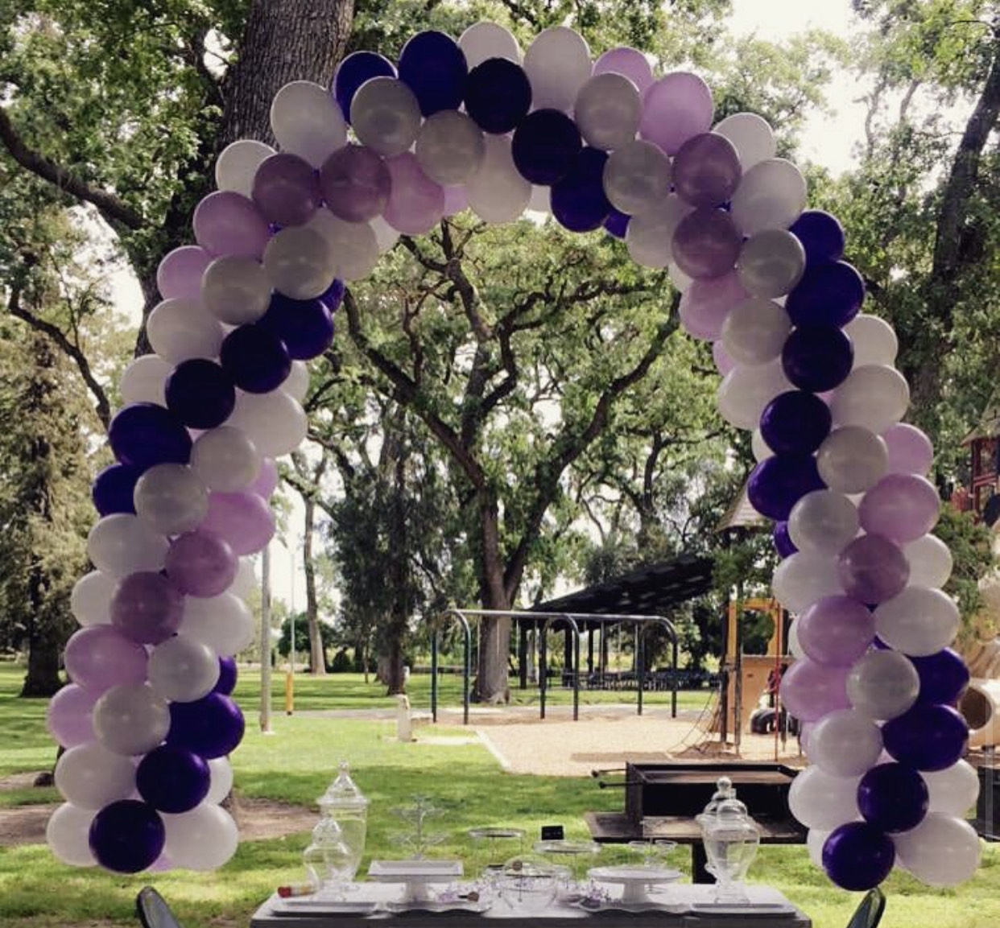

Brandon Le
Hello everyone. My birth name is Cuong Le, but I go by Brandon. I'm Vietnamese. Currently a student at CodeStack Academy.
Click here for my GitHub account!
My favorite foods:
- Bun Bo Hue
- Pho
- Sushi
- French Fries
- Anything liquid that I can drink xD
Fun Facts About Me:
- I make charcuterie boards
- I make balloon arches
- I am double jointed
- My favorite color is red
- I moved to a new school every year from 6th grade - 11th grade
